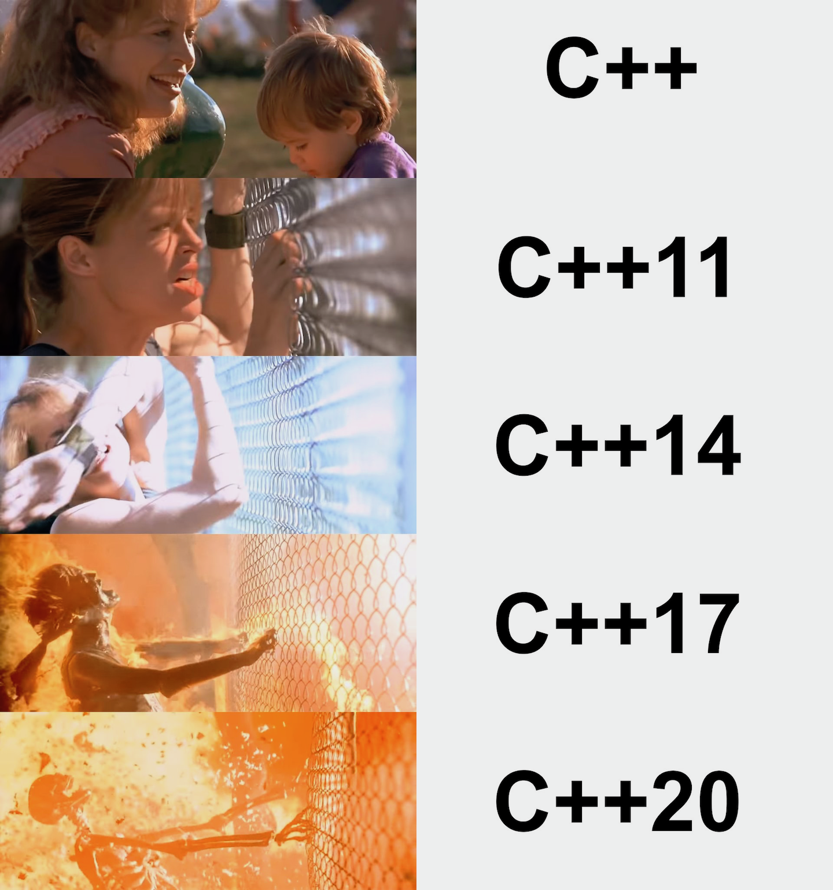

2019-07-18
https://www.bfilipek.com/2019/07/cologne.html
https://www.reddit.com/r/cpp/comments/cdehpc/five_awesome_c_papers_for_cologne_iso_meeting/
https://dev.to/taillogs/the-best-book-to-read-as-a-developer-1h4m
https://www.reddit.com/r/programming/comments/c8aaov/the_best_book_to_read_as_a_developer/
https://devblogs.microsoft.com/cppblog/clang-llvm-support-for-msbuild-projects/
https://www.reddit.com/r/cpp/comments/cc7tp9/clangllvm_support_for_msbuild_projects_c_team_blog/
https://blog.regehr.org/archives/1653
https://www.reddit.com/r/programming/comments/cc0oj9/explaining_code_using_ascii_art/
https://herbsutter.com/2019/07/13/draft-faq-why-does-the-c-standard-ship-every-three-years/
There are two basic release target choices: Pick the features, or pick the release time, and whichever you pick means relinquishing control over determining the other. It is not possible to control both at once.
C++20 has a lot of major features. Three of the biggest all start with the letters “co” (concepts, contracts, coroutines) so perhaps we could call it co_cpp20.
https://www.reddit.com/r/cpp/comments/ccqz7t/faq_why_does_the_c_standard_ship_every_three_years/
https://www.patreon.com/posts/28352557
If you're just writing a spot of code and don't want to be distracted by the assembly output, or if you want a little more control over how your code is executed on Compiler Explorer, the Execution pane is for you!
https://www.reddit.com/r/cpp/comments/ccv6r5/compiler_explorer_now_has_an_execution_only_pane/
https://quuxplusone.github.io/blog/2019/07/10/ways-to-get-dangling-references-with-coroutines/
https://www.reddit.com/r/cpp/comments/cbsbls/c2a_coroutines_and_dangling_references/
https://github.com/hellozee/errors
https://www.reddit.com/r/cpp/comments/c7il5n/an_idiots_attempt_to_do_a_go_like_error_handling/
It looks like you invented something similar to
std::expected.
https://medium.com/@bkey76/splitting-a-string-in-c-23e2547e6451
https://blog.jetbrains.com/rscpp/better-ways-testing-with-doctest/
